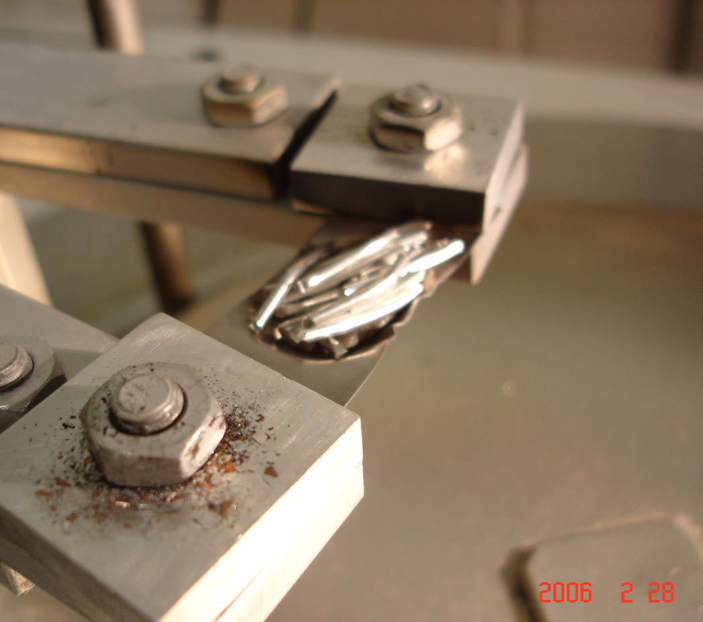
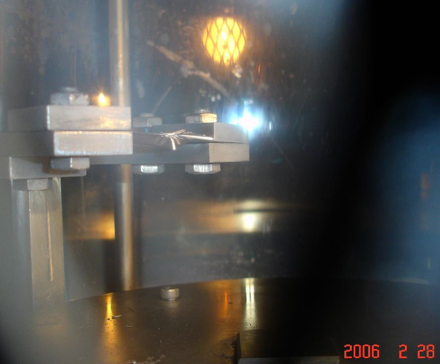
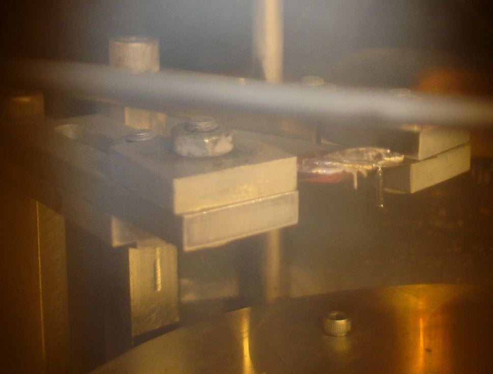
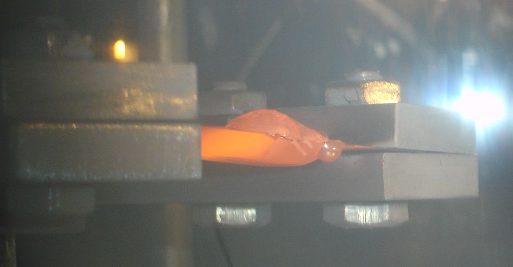
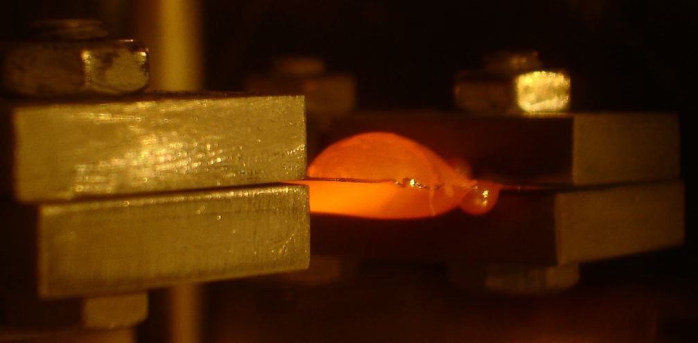
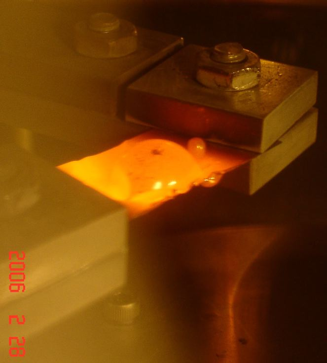
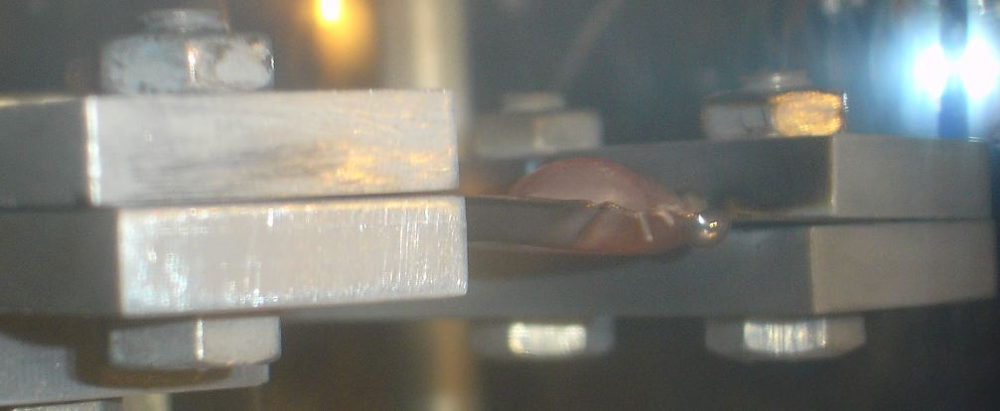

|
|
|
|
|
|
Why did Steven Jones state that aluminum is silvery at all temperatures?
According to Steven Jones, "Liquid aluminum has the property that it's silvery, rather like aluminum foil, you know, at all temperatures in daylight conditions." (mp3) Steven Jones made this statement on the Alex Jones show. (mp3) It is not possible to identify the type of material that is flowing simply by looking at a photo, as demonstrated by Steven Jones in analyzing the photos on this page, 8/10/06. (mp3) We encouraged Steven Jones to consult a high school physics book and read up on black-body radiation. After that was unsuccessful, we photographed this simple demonstration below and privately emailed this to Steven Jones. We can only wonder why an educated physicist would make a statement such as this. (mp3) |
These workers are pouring aluminum that is glowing so brightly they must wear light-attenuating masks.
PHOTO BY JUDY HAY source: Popular Mechanics |

|
Aluminum Glows
By Judy Wood and Michael Zebuhr March 1, 2006
This is from an email sent to Steven E. Jones, Wednesday, March 01, 2006 9:01 AM -----Original Message-----
PURPOSE:
METHOD:
The aluminum wire segments are stacked in the tungsten boat. It's
not the clearest picture, but you can tell that the aluminum is a dull
color (oxidized?)
 Here, the Aluminum wire is beginning to bend over the edge. It may not be obvious, but the boat is just beginning to glow. The aluminum looks a little more shiny.  Notice that the aluminum has melted, or is about to melt, and still appears silver. It looks like it dripped over the edge, but that's just where the wire drooped over the edge. The thick piece of wire that is hanging straight down looks more shiny than it did before it was heated. This is true for all of the aluminum.  After melting, the aluminum forms a ball. (It looks like a rising loaf of bread!) Notice that the drip hanging below (near the right end of the boat) is glowing, yet has a more silver color than the "bread loaf."  Notice the drip on the under side, hanging down. The surface tension seems to be fairly high. Notice that the drip hanging below (near the right end of the boat) is glowing, yet has a more silver color than the "bread loaf," indicating that it is slightly cooler than the aluminum on the other side. Also, the tungsten boat this drop is hanging from is a dark red. Let's consider the evidence. Turn on a standard 60-Watt incandescent
light bulb and see if it has "low emissivity." The filament is almost
certainly made of tungsten. In the pictures Michael took of the glowing
aluminum, the aluminum is sitting on a tungsten "boat." The aluminum
has the same glow as the tungsten. So, we can conclude that the aluminum
and the tungsten have the same emissivity.
 This is the same image I have in a video clip. The dark spot at the top looks silver and dances around like it's boiling. You may notice the darkened appearance around the copper block that clamps the end. That's what I refer to as the high-pressure "evaporation." What you see is from these experiments alone. Notice that the drip hanging below (near the right end of the boat) is glowing, yet has a more silver color than the "bread loaf."  Here is where we abruptly turned down the current, cooling the tungsten boat. The aluminum is still glowing. Note that the drip on the under side, near right end, looks silver. I believe it looks silver at a slightly lower temperature than the red glow, although it is (just barely) melted. In full atmospheric pressure, I think the surface may be more likely to look silver (a) because of the temperature loss adjacent to the surface, and (b) there may be some reaction with the air, just on the surface. But that would only be an issue at the "just-barely-glowing temperatures. The "rising loaf of bread" appearance is interesting. This is caused by the low-pressure environment, but may exist in atmospheric pressure, too, as the result of high surface tension.  Other examples of glowing molten aluminum.
back to top
See also the glowing
aluminum page in memory of Michael Zebuhr.
|
|||||||||||||||||
{kind=link}
{kind=link}
{kind=link}
|
|
|
|
|
|
|
|
|